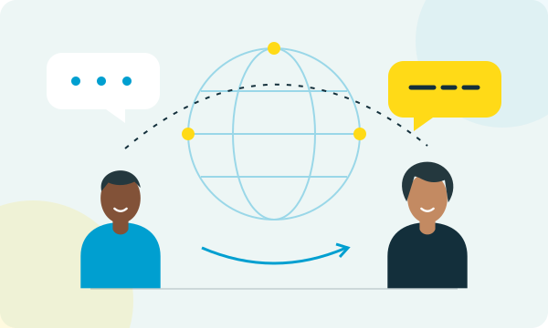
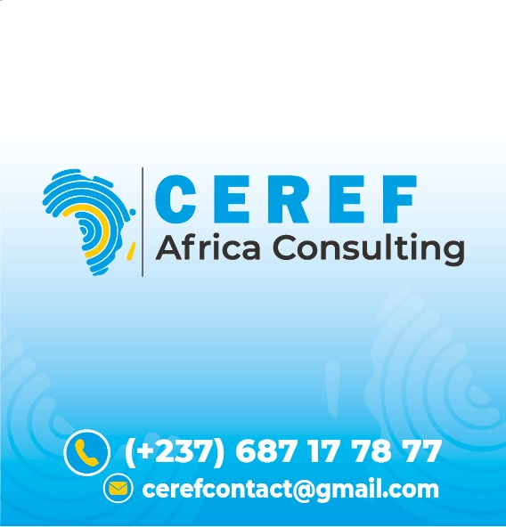

Langues internationales01
S’OUVRIR AU MONDE
Langues
internationales
Communiquer au-delà des frontières et gagner en aisance dans vos échanges.
Construire mon parcours ↗
CEREFAfrica ConsultingFORMATION · LANGUES · CONSEIL
Ouvrez-vous au monde, cultivez vos racines et donnez une nouvelle dimension à vos projets avec CEREF Africa Consulting.
Ancrés au Cameroun.
Ouverts sur le monde.
01 / SE FORMER
Pour un projet personnel, professionnel ou culturel : trouvons ensemble la formation qui vous correspond.

S’OUVRIR AU MONDE
Communiquer au-delà des frontières et gagner en aisance dans vos échanges.
Construire mon parcours ↗FAIRE VIVRE NOS CULTURES
Renouer avec ses racines, transmettre un héritage et découvrir d’autres cultures.
Parlons de ma langue ↗ÉVOLUER AU QUOTIDIEN
Développer les compétences qui accompagnent vos équipes et vos projets.
Parlons de mes objectifs ↗Également au centre : ateliers d’écriture et de lecture. En savoir plus →
02 / L’ESPRIT CEREF
Centre de Recherche, d’Étude et de Formation, CEREF Africa Consulting réunit formation, conseil et accompagnement à Douala.
Notre point de départ : votre projet. Apprendre une langue, renforcer vos pratiques de management ou structurer une initiative : chaque échange permet de préciser vos besoins.
Faire le point sur vos attentes et le contexte de votre projet.
Échanger sur les contenus et les modalités adaptés à votre besoin.
03 / ACCOMPAGNER VOS PROJETS
Des services complémentaires pour vos activités, vos équipes et vos temps de travail.
Éclairer vos décisions et structurer vos projets.
↗02Processus, performance et compétences.
↗03Un espace pour vos échanges professionnels.
↗04 / DÉCOUVRIR CEREF
Découvrez les supports de présentation de notre centre. Cliquez pour les consulter.
ET SI ON COMMENÇAIT ?
Vous souhaitez vous former ou accompagner votre équipe ? Contactez-nous pour discuter des possibilités.
+237 687 17 78 77 ↗cerefcontact@gmail.comYassa, cité SAD « Maille 6 »